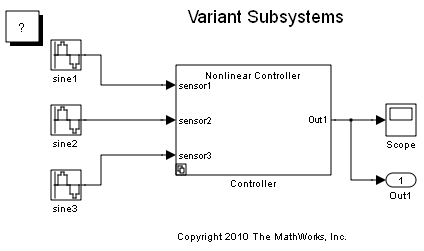
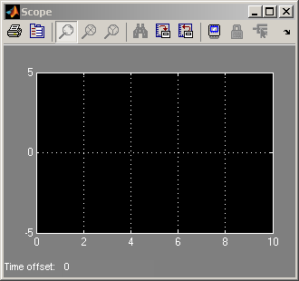
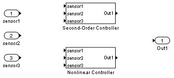
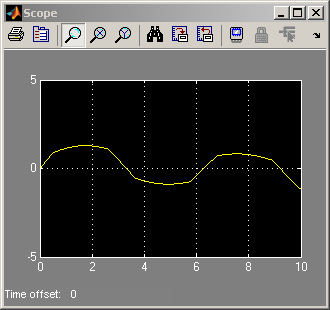
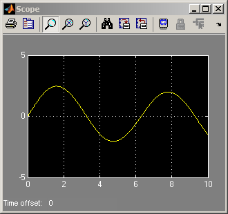
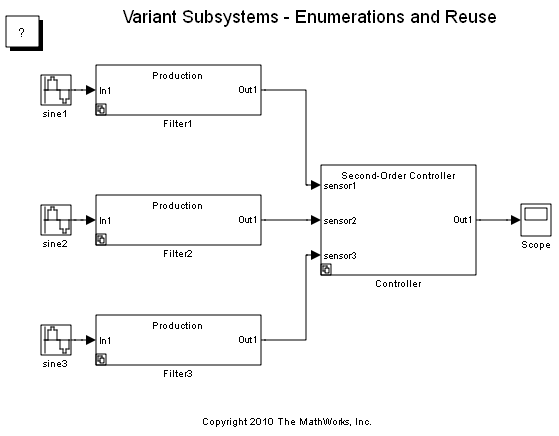

Variant Subsystems
This demo illustrates Simulink® variant subsystems. Variant subsystems let you provide multiple implementations for a subsystem where only one implementation is active during simulation. You can programmatically swap out the active implementation and replace it with one of the other implementations without modifying the model.
Contents
Overview of Variant Subsystems
A Variant Subsystem block contains two or more child subsystems where one child is active during model execution. The active child subsystem is referred to as the active variant. You can programmatically switch the active variant of the Variant Subsystem block by changing values of variables in the base workspace, or by manually overriding variant selection using the Variant Subsystem block dialog. The active variant is programmatically wired to the Inport and Outport blocks of the Variant Subsystem by Simulink during model compilation.
To programmatically control variant selection, a Simulink.Variant object is associated with each child subsystem in the Variant Subsystem block dialog. Simulink.Variant objects are created in the MATLAB® base workspace. These objects have a property named Condition, which is an expression, that evaluates to a boolean value and is used to determine the active variant child subsystem. For example, defining
VSS_NONLINEAR_CONTROLLER=Simulink.Variant('VSS_MODE==1');
in the base workspace creates a Simulink.Variant object where the constructor argument ('VSS_MODE==1') defines when the variant is active. Using the Variant Subsystem dialog, you then associate VSS_NONLINEAR_CONTROLLER with one of the child subsystems within the Variant Subsystem. Defining
VSS_MODE=1
in the base workspace, activates the VSS_NONLINEAR_CONTROLLER variant. The condition argument can be a simple expression consisting of scalar variables, enumerations, equality, inequality, &&, ||, and ~. Parenthesis () can be used for precedence grouping.
Using Variant Subsystems
The model in this demo uses the following variant objects and variant control variable, which are defined in the MATLAB base workspace:
VSS_NONLINEAR_CONTROLLER=Simulink.Variant('VSS_MODE==1');
VSS_SECOND_ORDER_CONTROLLER=Simulink.Variant('VSS_MODE==2');
VSS_MODE=1;
Opening the demo model sldemo_variant_subsystems runs the PreLoadFcn defined in File -> ModelProperties -> Callbacks. This populates the base workspace with the variables for the Variant Subsystem block named Controller:
VSS_NONLINEAR_CONTROLLER =
Simulink.Variant
Condition: 'VSS_MODE==1'
VSS_SECOND_ORDER_CONTROLLER =
Simulink.Variant
Condition: 'VSS_MODE==2'
VSS_MODE =
1
  Figure 1: The demo model, sldemo_variant_subsystems
To specify the Simulink.Variant objects association for the Controller subsystem, right-click on the Controller subsystem and select Subsystem Parameters, which will open the Controller subsystem block dialog.
The Controller subsystem block dialog specifies two potential variants. The two variants are in turn associated with the two Simulink.Variant objects VSS_NONLINEAR_CONTROLLER and VSS_SECOND_ORDER_CONTROLLER, which exist in the base workspace. These objects have a property named Condition, an expression that evaluates to a boolean and that determines which variant is active. The condition is also shown in the Variant Subsystem block dialog. In this example, the Condition properties of VSS_NONLINEAR_CONTROLLER and VSS_SECOND_ORDER_CONTROLLER are VSS_MODE == 1 and VSS_MODE == 2, respectively. The variable VSS_MODE resides in the base workspace, and can be a standard MATLAB variable or a Simulink.Parameter.
If there is no associated variant object or a '%' (comment) character prefixes the variant object in the Variant Subsystem parameters dialog box, then the child subsystem is considered commented out and is not used during model execution.
Figure 2: Contents of the Controller subsystem block
Within a Variant Subsystem block, you can place Inport, Outport, and Subsystem blocks. In this example, the Second-Order Controller Subsystem block is associated with the variant object, VSS_SECOND_ORDER_CONTROLLER, and the Nonlinear Controller Subsystem block is associated with the variant object, VSS_NONLINEAR_CONTROLLER.
Signal connections are not allowed in the Variant Subsystem. Simulink programmatically wires up the Inport and Outport blocks to the active variant when simulating the model.
Switching Active Variants
To simulate using the Nonlinear Controller variant, define:
VSS_MODE=1
in the base workspace and then simulate the model.
Figure 3: Simulation using the Nonlinear Controller variant
To simulate using the Second-Order Controller, define
VSS_MODE=2
in the base workspace and then simulate the model.
Figure 4: Simulation using the Second-Order Controller variant
Enumerations and Reuse
The sldemo_variant_subsystems_enum model illustrates the following Simulink.Variant capabilities:
1. Enumerations: MATLAB enumeration classes can be used to improve readability in the conditions of the variant object.
2. Reuse: Simulink.Variant objects can be reused in different Variant Subsystem blocks.
This demo uses the following variables which are defined in the MATLAB base workspace:
VSSE_NONLINEAR_CONTROLLER=Simulink.Variant( ... 'VSSE_MODE==sldemo_vss_CONTROLLER_TYPE.NONLINEAR')
VSSE_SECOND_ORDER_CONTROLLER=Simulink.Variant( ... 'VSSE_MODE==sldemo_vss_CONTROLLER_TYPE.SECOND_ORDER')
VSSE_MODE=sldemo_vss_CONTROLLER_TYPE.SECOND_ORDER
VSSE_PROTOTYPE=Simulink.Variant( ... 'VSSE_MODE_BUILD==sldemo_vss_BUILD_TYPE.PROTOTYPE')
VSSE_PRODUCTION=Simulink.Variant( ... 'VSSE_MODE_BUILD==sldemo_vss_BUILD_TYPE.PRODUCTION')
VSSE_MODE_BUILD=sldemo_vss_BUILD_TYPE.PRODUCTION
In these Simulink.Variant objects, we use the enumeration classes, sldemo_vss_BUILD_TYPE.m, and sldemo_vss_CONTROLLER_TYPE.m to define the Simulink.Variant Condition parameters which improves readability.
The three filter Variant Subsystems blocks, Filter1, Filter2, and Filter3 all use the VSSE_PROTOTYPE and VSSE_PRODUCTION Simulink.Variant objects.
Opening the demo model sldemo_variant_subsystems_enum runs the PreLoadFcn defined in File -> ModelProperties -> Callbacks. This populates the base workspace with variables for the Variant Subsystem blocks:
VSSE_NONLINEAR_CONTROLLER =
Simulink.Variant
Condition: 'VSSE_MODE==sldemo_vss_CONTROLLER_TYPE.NONLINEAR'
VSSE_SECOND_ORDER_CONTROLLER =
Simulink.Variant
Condition: 'VSSE_MODE==sldemo_vss_CONTROLLER_TYPE.SECOND_ORDER'
VSSE_MODE =
SECOND_ORDER
VSSE_PROTOTYPE =
Simulink.Variant
Condition: 'VSSE_CURRENT_BUILD==sldemo_vss_BUILD_TYPE.PROTOTYPE'
VSSE_PRODUCTION =
Simulink.Variant
Condition: 'VSSE_CURRENT_BUILD==sldemo_vss_BUILD_TYPE.PRODUCTION'
VSSE_CURRENT_BUILD =
PRODUCTION
 Figure 5: The demo model, sldemo_variant_subsystems_enum
Code Generation
You can use the Real-Time Workshop® to generate code from a model containing Variant Subsystem blocks. By default the generated code contains only the active variant. Alternatively, you can generate code for all variants guarded by C preprocessor conditionals (#if, #elif, #endif) when using the Real-Time Workshop® Embedded Coder™.
To generate preprocessor conditionals, the types of blocks that you can place within the child subsystems of a Variant Subsystem block are limited. During the code generation process, one Merge block is placed at the input of each Outport block within the variant subsystem and connected to the child subsystems within the variant subsystem. Thus, the restrictions placed on Merge blocks apply to the contents of Variant Subsystem blocks. The restriction checks are only performed when generating code. In addition, the child subsystems of the Variant Subsystem block must be Atomic subsystems, which are created by selecting the Treat as atomic unit parameter of the Subsystem parameters dialog box.
Code generation of preprocessor conditionals is active when
- Inline Parameters is selected on the Optimization pane of the Configuration Parameters dialog box.
- Real-Time Workshop Embedded Coder target is selected on the Real-Time Workshop pane of the Configuration Parameters dialog box.
- The Override variant conditions and use following variant is not selected on the Variant Subsystem block parameter dialog box.
and
- Generate preprocessor conditionals in the Real-Time Workshop/Interface pane of the Configuration Parameters dialog is set to Use local settings and you have selected Generate preprocessor conditionals on the Variant Subsystem block parameter dialog box, or
- Generate preprocessor conditionals in the Real-Time Workshop/Interface pane of the Configuration Parameters dialog is set to Enable all. In this case, preprocessor conditionals will be generated for all Variant Subsystem blocks that have not selected the Override variant conditions and use following variant Variant Subsystem parameter dialog box.
When code generation of preprocessor conditionals is active, the generated code contains all child subsystems of the Variant Subsystem blocks protected by C preprocessor conditionals. In this case, the selection of the active variants is deferred until compile-time of the generated code. Only one variant object which is encoded in C macros, must evaluate to true (be active).
In addition, the variant control variables (such as VSS_MODE and VSSE_MODE above) must be Simulink.Parameter objects that specify how the #define's for the variant control variables are managed in the generated code. For the sldemo_variant_subsystems, you can clear the VSS_MODE double from the base workspace. Use Model Explorer -> Simulink Root -> Base Workspace to add a new Simulink.Parameter named VSS_MODE. Specify the parameter Value as 1 or 2, the Data Type as int32, and Storage class as ImportedDefine (Custom) with Custom attributes Header file as sldemo_variant_subsystems_vdef.h. You should then create this header in the current working directory:
/* File: sldemo_variant_subsystems_vdef.h */ #ifndef SLDEMO_VARIANT_SUBSYSTEM_VDEF_H #define SLDEMO_VARIANT_SUBSYSTEM_VDEF_H #define VSS_MODE 1 #endif
See the Real-Time Workshop Embedded Coder for more information on code generation for variant subsystems.